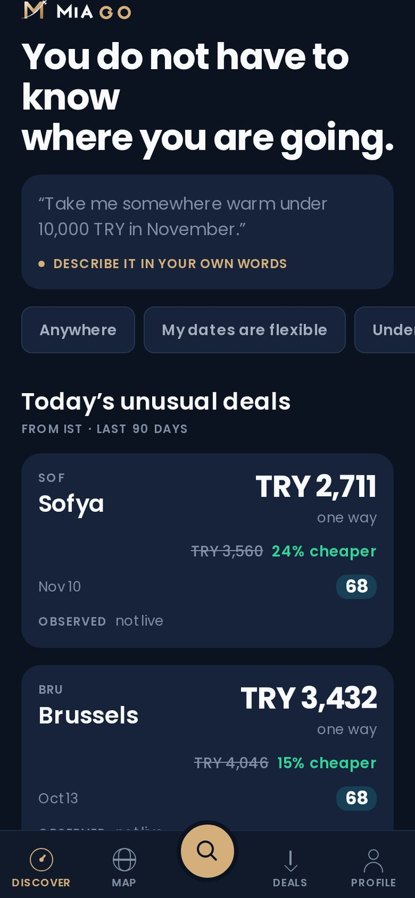
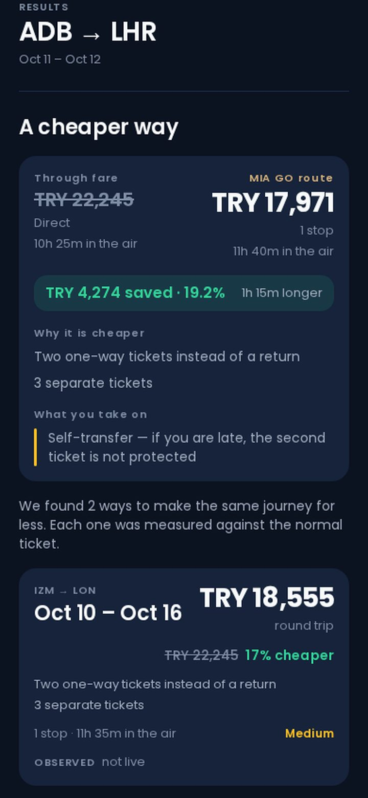
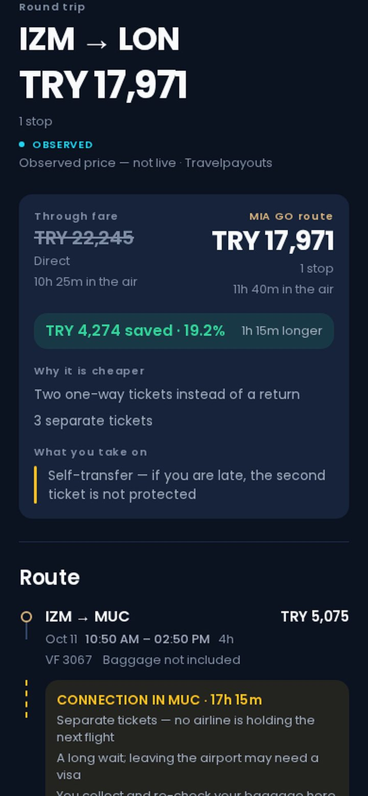

It starts from a budget
You can search a route the ordinary way. You can also say “somewhere warm in November, under 10,000 TRY, up to 8 nights” and let the engine pick the destination.
Flight discovery & route arbitrage · Türkiye
Most flight search asks where you want to go and then compares prices on that one route. MIA GO asks a different question: what is the cheapest way to make this journey? Nearby departure airports, flexible dates, separately-ticketed combinations, gateway routings — scored for connection risk and for what they really cost.
In development · v0.1 · not yet released · MIA GO does not sell tickets
A discovery engine, not a booking site. It reads a large body of observed price data, builds alternative ways to make the same journey, and explains what each one costs you — in money, in time, and in the risk you take on.
You can search a route the ordinary way. You can also say “somewhere warm in November, under 10,000 TRY, up to 8 nights” and let the engine pick the destination.
Every price on screen carries where it came from and when it was seen. Nothing is presented as a live, bookable fare unless it has actually been checked.
A cheaper combination usually means a longer journey, a self-transfer or a second ticket. Those are shown next to the saving, not below the fold.
01 — Smart Flight Discovery
Conventional search needs an origin, a destination and a date before it can answer anything. That is fine when you know where you are going, and useless when your real constraint is a budget and a week off work.
MIA GO takes the constraints you actually have — a budget ceiling, a month, a trip length, a vague idea like “somewhere warm” — and searches outward from them. The natural-language box parses that sentence into constraints; it does not invent prices, it only decides what to look for.

02 — Flight Hacker
This is the part of the product that has to justify itself in three seconds, so it is built as a comparison rather than a list: the ordinary through fare on one side, the combination MIA GO assembled on the other, and the difference stated in both directions.
TRY 4,274 saved · 19.2% 1h 15m longer
Self-transfer — if you are late, the second ticket is not protected
An illustration built from real observed data on İzmir→London. It is an example of the screen, not an offer.

03 — Price Intelligence
A number on its own means nothing. MIA GO keeps a history of the prices it has observed on a route and places the current one against that history — or says plainly that it cannot.
The price is placed against the route’s own observed median, with the sample size shown.
We say how many observations we have and decline to rank the price. A percentile from four data points is a guess wearing a number.
“We have no past observations for this route” — followed by what that does not mean: it is not a claim that the price is bad.
04 — Flexible dates & nearby airports
A calendar grid across a month, showing where the cheap departure–return pairs actually fall rather than making you probe one date at a time.
İzmir instead of İstanbul; London Stansted instead of Heathrow. Where a positioning leg is worth it, MIA GO builds it — and adds the ground transfer to the total, because a fare that ignores the transfer is not a total.
05 — Price Alerts
Set a route, a budget ceiling and a date range. MIA GO evaluates it against newly observed prices and notifies you when the route falls below your ceiling, or when a price looks unusual against that route’s own history.

06 — Live price verification
Live verification provider integration in progress
MIA GO runs on observed price data: prices seen in real searches, cached by the data provider, typically hours to a few days old. That is what makes a price history — and therefore Price Intelligence — possible at all. It is not a live, bookable fare, and the product never claims it is.
The one place a live query belongs is at the point of decision: a person has chosen an itinerary and pressed “Verify the price.” That path is built and running end to end. What it does not have yet is a live provider behind it, and we are applying for one.
With no live provider connected, pressing “Verify the price” returns NOT VERIFIED — the honest answer — rather than a confirmation the product cannot stand behind.
A live query is only ever made in direct response to that user action. It is never made from a background job, and that rule is enforced in code rather than by convention.
07 — Coverage & data transparency
Coverage is uneven, and the product says so on the screen rather than filling gaps with something plausible. A route with no observations produces an explicit “no data” state — never an invented price and never a confident-looking empty list.
Current price source: the Travelpayouts Flights Data API, whose terms explicitly permit caching. MIA GO does not scrape, and does not query any provider’s live search from a background job.
React Native, 22 translated languages with a 196-locale catalogue, right-to-left layouts, light and dark themes. Screens below are real builds running on recorded price data.
MIA GO is built and operated by an independent developer in Aydın, Türkiye. For partnership, API access or press enquiries:
MIA GO does not sell tickets and does not take payments. It links to the sellers whose prices it observes.